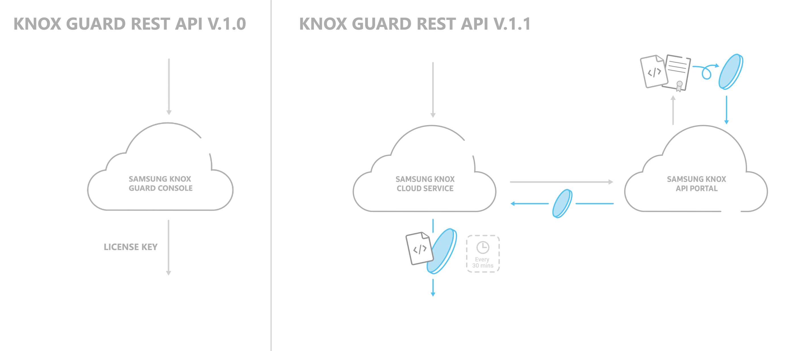

Upgrade to v1.1.x REST APIs
Knox Guard v1.0 REST APIs were deprecated as of March 2019. Please migrate to the v1.1 and higher APIs.
Samsung Knox Guard has restructured the authentication framework to adhere to Knox Cloud standards for REST API authentication. The Knox Portal dashboard now displays a new tile if you have permission to any of the supported cloud services, to launch the Knox Cloud API portal. From here, you can generate a token for enhanced security across all Samsung Knox Cloud REST API services.
If you are new to Knox Guard, disregard the following information and begin using the latest version of the REST APIs. If you are currently using the v1.0 APIs, migrate your solution to the latest APIs, as license keys to use v1.0 expired in March 2019.

With Knox Guard v1.1 REST APIs, the authentication token is a Client Identifier and Public Key that is uniquely bound to your Private Key. When the binding process occurs, there is a expiration period of 30 minutes after the accessToken and Client Identifier are encoded. Samsung Knox has created a JAR file to help implement this binding process. For more information about the binding process and authentication APIs, see the Cloud Authentication Guide.
Modify your REST APIs
To upgrade your existing solution to Knox Guard REST API v1.1, make the following changes below.
- Update the URL — Change the versioning URI from
v1tov1.1. All version 1 REST APIs have a corresponding v1.1 REST API. See the server for the full change of the URL. - Generate your token — See the authentication parameter and the authentication REST API to learn how to create your token.
- Add your API token — Modify your previous head parameter
x-knox-apikeyto the new parameterx-knox-apitokenfor all REST API calls.
How to generate your new token
The x-knox-apitoken will need to be generated every 30 minutes. The timer will start once the accesstoken is bound to the private key; this bound key can then be used as the x-knox-apitoken parameter. For more information on generating your authentication token, see the Cloud Authentication API reference.
-
From the Samsung Knox dashboard, launch the Cloud Portal console. This is different than the KG console you requested access to above, but will appear on the Samsung Knox dashboard if you have access to any Samsung Knox Cloud Service.
-
Select the Knox API portal and launch the console.
-
When the portal is first launched, download the certificate from the prompt. This certificate contains the following:
-
Public key — Key that is sent in the body of accesstoken REST API, encoded base64.
-
Private key — Key that should be stored and never revealed. This key is used for signing the Identifier and the access token received from the REST API call.
-
Identifier — A unique identifier for each user which is currently not used in v1.0 of this API.
-
-
In the portal, activate your API key. Once this API key is signed with the private key, using the jar file, will be used in the body of your request as the parameter
clientIdentifierJwt. -
You can now generate your access token using the
accesstokenREST API.
After you receive your access token sign it, using the JAR file to privately encode it, before using it as your authentication token in future Cloud REST API calls. Once signed it will only be valid for 30 minutes.
For more information on how to generate your authentication token, see the Knox Cloud Authentication API reference.
On this page
Is this page helpful?